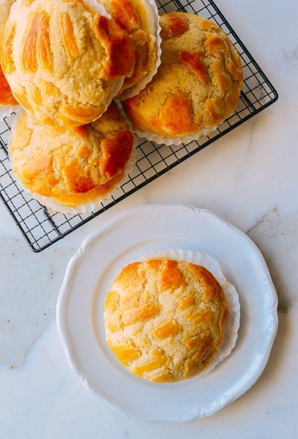

Pineapple Bun

A pineapple bun is a kind of sweet bun predominantly popular in Hong Kong and also common in Chinatowns worldwide. Despite the name, it does not traditionally contain pineapple; rather, the name refers to the look of the characteristic topping.
Ingredients needed
- heavy cream
- milk
- egg
- sugar
- flour
- yeast
- salt
Steps to making
- start by making the milk bread dough
- Cover the bowl with a damp towel and place in a warm spot for 1 hour. The dough will grow to 1.5X its original size.
- Dump the dough on a lightly floured surface and cut into 12 equal pieces. Form each piece into a circular bun, and place on a baking sheet. Cover the buns with a clean, dry kitchen towel and let rise for another hour.
- While that’s happening, make the topping. Add the dry milk powder to a mixing bowl. If your dry milk powder has some larger clumps, crush them up with your fingers so it’s uniformly powdery.
- Add the flour, baking soda, baking powder, and superfine sugar. Stir to combine. Add the shortening, milk, egg yolk, and vanilla. Use your hands to mix everything together into a dough. If it’s too dry, add a little more milk a teaspoon at a time until it comes together. Cover tightly with plastic wrap and set aside at room temperature.
- When the pineapple buns are done rising for a second time, preheat the oven to 350 degrees F. Separate the topping dough into 12 equal pieces and roll them into balls.
- On a clean surface, roll out each ball into a flat circle. and place one onto each bun
- Bake at 350 degrees for 12-13 minutes on a baking sheet. You’ll see the topping start to crack into that signature pineapple pattern. Success!